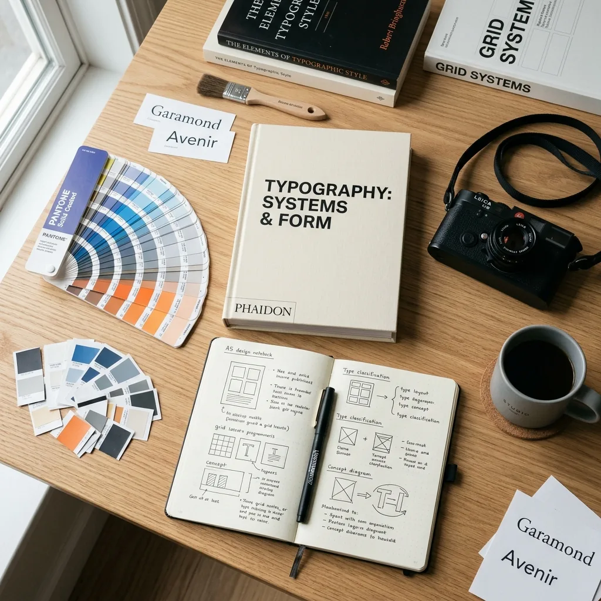
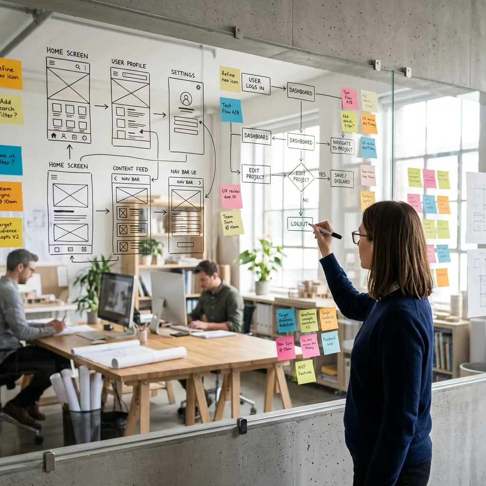
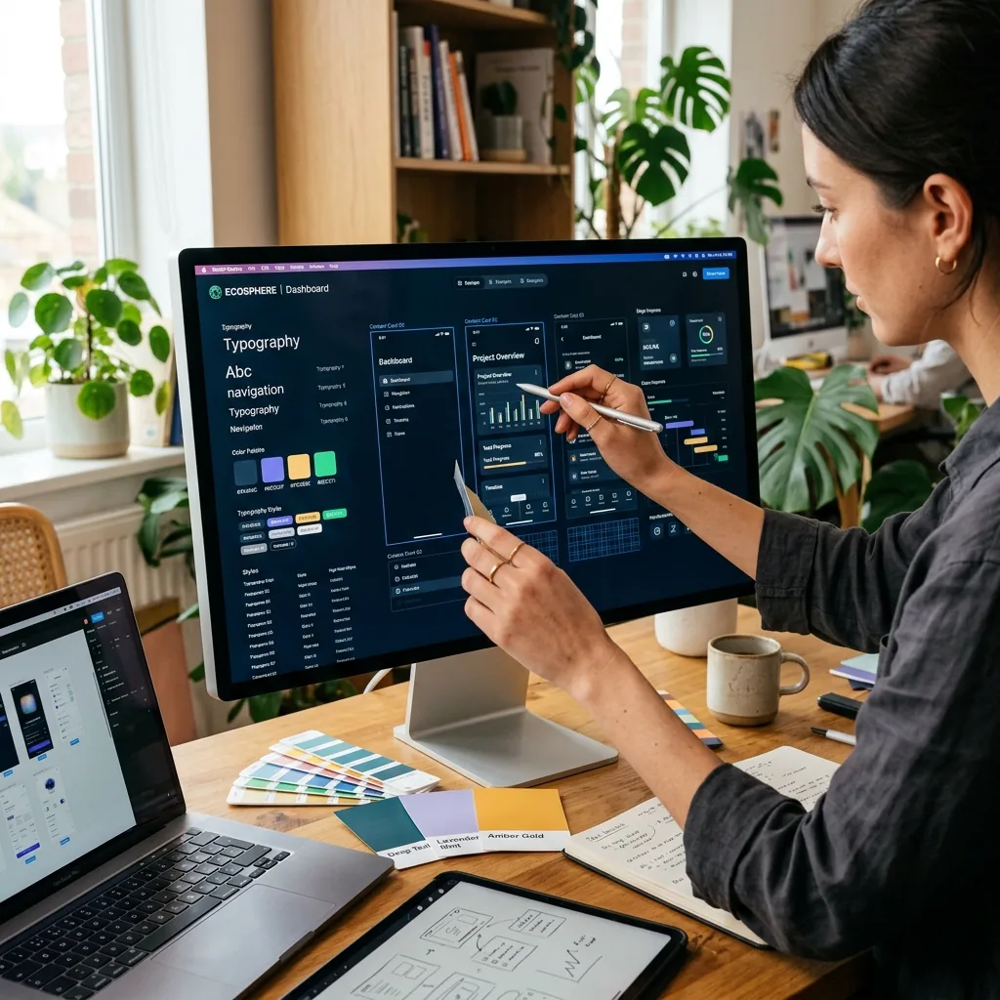

METHODOLOGY
A structured yet fluid approach to solving complex problems through research, empathy, and meticulous visual execution.
Research and strategy
expand_moreBefore pushing pixels, I immerse myself in the problem space. This stage is about asking the right questions, auditing existing systems, and defining success metrics through stakeholder interviews and user research.
OUTPUTS

Ideation and wireframing
expand_moreTurning insights into tangible flows. I explore multiple directions through rapid sketching and low-fidelity wireframing to map out the information architecture and core user journeys.

OUTPUTS
Tokens and components
expand_moreCreating the visual language and building a scalable library of reusable components. This ensures consistency and efficiency throughout the design and development lifecycle.
Visual execution
expand_moreBringing the brand to life through high-fidelity interfaces. I focus on typography, color theory, and imagery to create an emotionally resonant and functional user experience.

Interaction and motion
expand_moreDefining the choreography of movement. High-fidelity prototypes allow stakeholders to feel the experience and developers to understand complex transitions.
Handoff and support
expand_moreEnsuring a smooth transition to engineering. I provide comprehensive documentation, asset exports, and ongoing support during the implementation phase.